Cartoview¶
Introduction ¶
This document describes the installation of Cartoview with GeoNode 2.10.3 on Windows 10
Installation Requirements ¶
-
Install Python2.7
Download Python Windows installer and proceed with installation.
While installing python, we need to add it to the path so that we can use it inside the command prompt.
Instead of this:
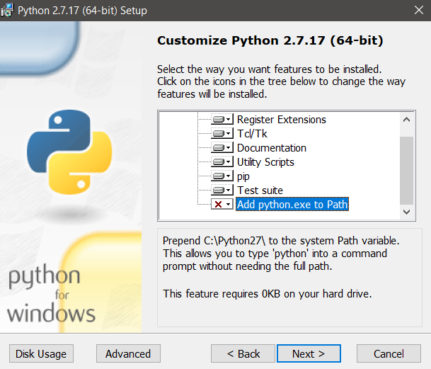
Be this:
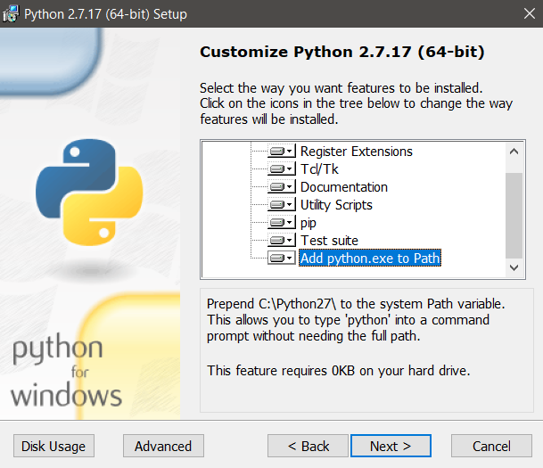
Then click
NextthenFinishto complete the installation. -
Create a Python Virtual Environment
Create a folder in the directory at which you want to install Cartoview and Let's name it
cartoview_service(You can name it whatever you want).Inside
cartoview_servicefolder,right-click with left-Shiftand selectOpen PowerShell window here.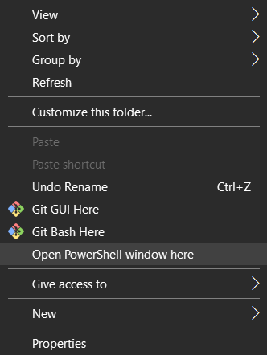
This will open a terminal in which we will execute all the upcoming commands.
Create a virtual environment and call it
cartoview_venv.1
virtualenv cartoview_venv
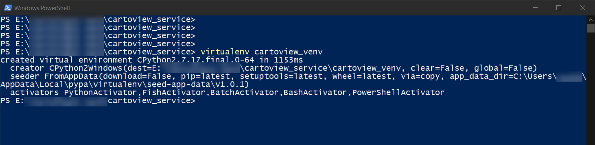
Now after creating the virtual environment, we need to activate so that we will be able to use it. Just type that in the powershell.
1
.\cartoview_venv\Scripts\activate
Notes
-
If you are having an issue executing the above command, specifically if you got this error
cannot be loaded because the execution of scripts is disabled on this system.Close current powershell session and open another but with the "Run as Administrator" option (You can search for the powershell inside the search bar).
Inside the terminal session, execute this:
1
set-executionpolicy remotesigned
This will allow running unsigned scripts that you write on your local computer and signed scripts from Internet. Now, you can try activating the virtual environment again.
-
You would notice how your prompt is now prefixed with the name of the virtual environment,
cartoview_venvin our case.
-
-
Install the following required packages
Note
From now on, each command must be executed inside the PowerShell while the virtual environment is activated.
1
pip install django==1.11.11 GDAL==2.2.4 Shapely==1.6.4.post2 Pillow==6.2.2 libxml2-python==2.9.3 pytz==2019.3
Note
If you got errors while installing the above packages, you can download the wheel files of the packages that cause these errors from The Unofficial Windows Binaries for Python Packages.
For Example, to install
GDAL 2.2.4:1. Download the wheel file of GDAL 2.2.4 that is compatible with Python 2.7 from the above link. You should get a file called,
GDAL-2.2.4-cp27-cp27m-win_amd64.whl.2. While having the virtual environment
cartoview_venvactivated, navigate to the downloads folder (or the folder in which you have downloaded the wheel file), execute the following.1 2
cd C:\Users\your_user\Downloads pip install GDAL-2.2.4-cp27-cp27m-win_amd64.whl
Database Installation ¶
-
Download PostgreSQL installer certified by EnterpriseDB from here. We will use version 10.12.
1. Open the downloaded exe and Click next on the install welcome screen.
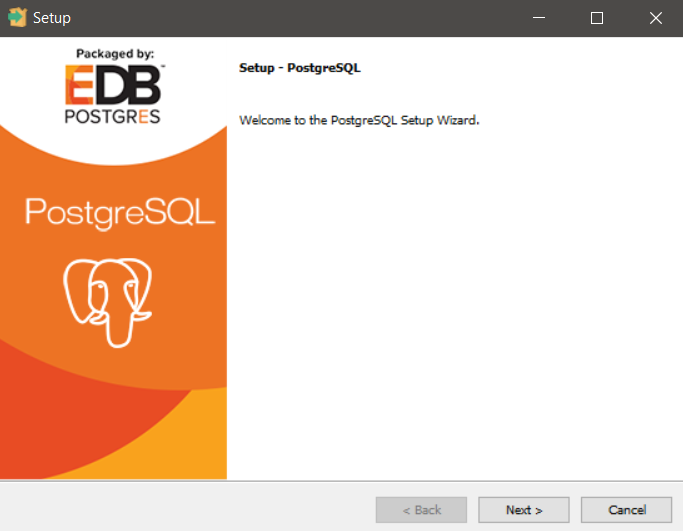
2. Change the Installation directory if required, else leave it as default. Click Next
3. You can choose the components that you want to be installed in your system. We will leave it as default.
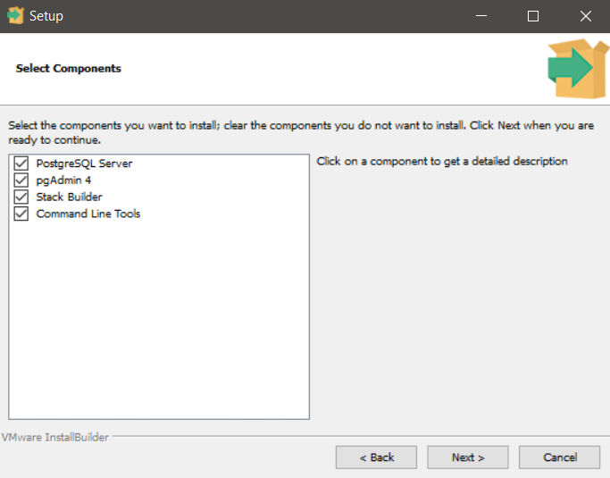
Note
This will install
pgAdmin4which is a management tool for PostgreSQL database.4. Leave the data location as default.
5. Enter a super user password. This is the one by which you will access all your databases including what we will create next, so make a note of it.
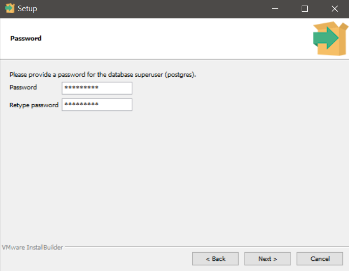
6. Leave the port number
5432as default.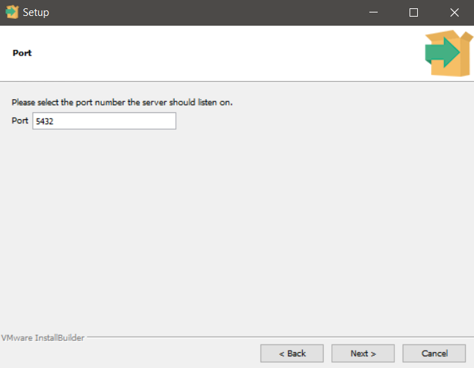
7. Check the pre-installation summary.
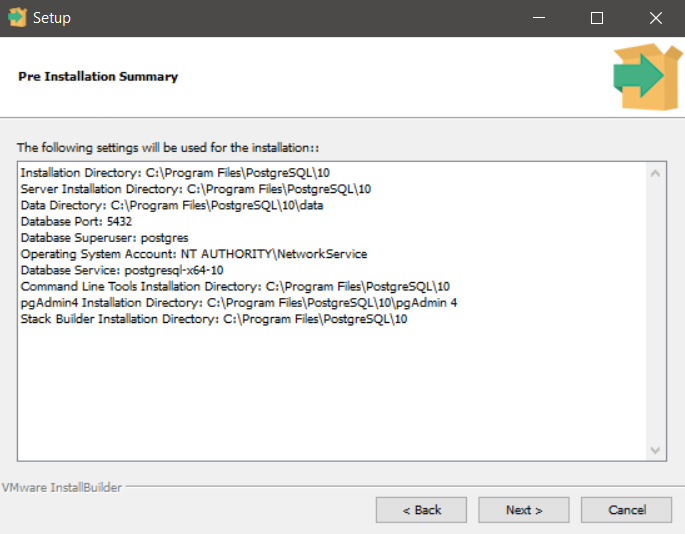
8. Click
Nextto start the installation.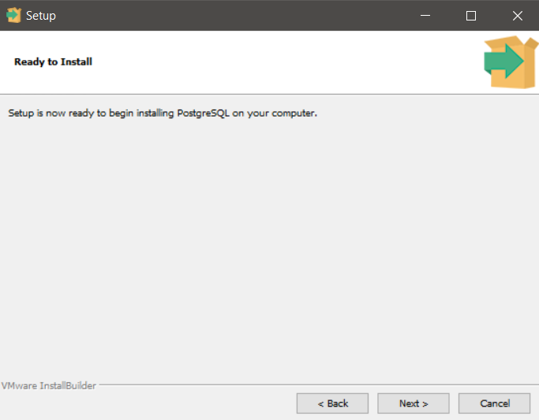
9. Wait for the installation to be completed.
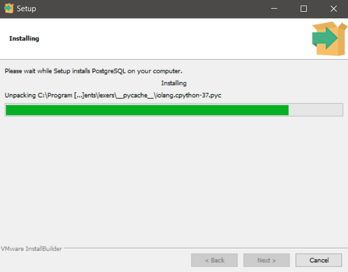
10. Make sure to leave that check on to open the stack builder after finishing.
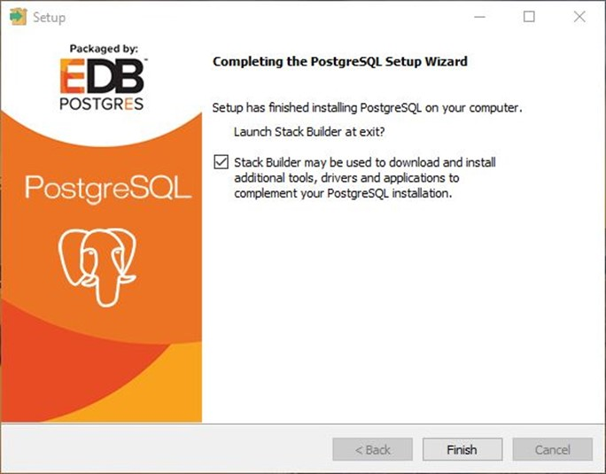
11. Select
PostgreSQL 10 (X64) on port 5432.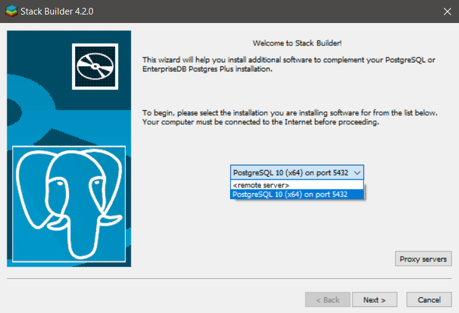
Install PostGIS 2.4
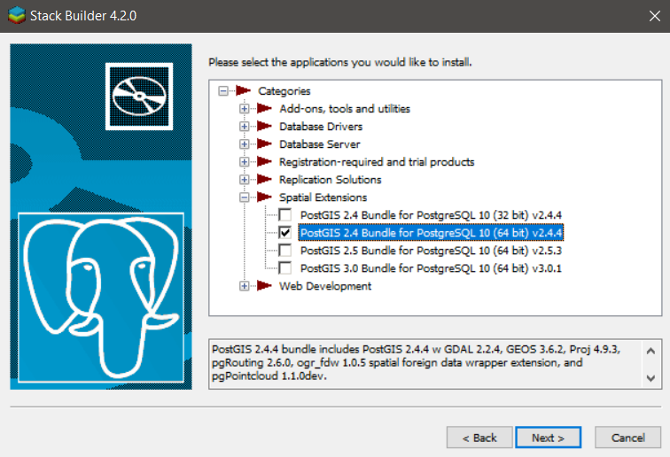
12. Select
Nextto install PostGIS. This will download all the required files for it.13. Install PostGIS as usual. Click
Okfor any prompt appears.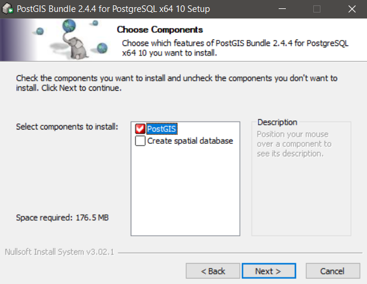
Now the installation is completed.
-
Let's access pgAdmin4
In the search bar (beside windows icon), search for
pgAdmin4application and run it.If you click on PostgreSQL under Servers panel, you will be prompted to enter the password that you set during the installation.
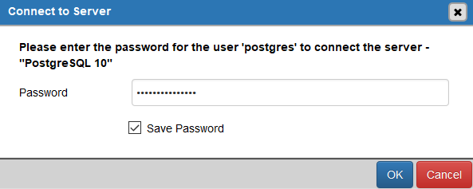
You will see pgAdmin dashboard.
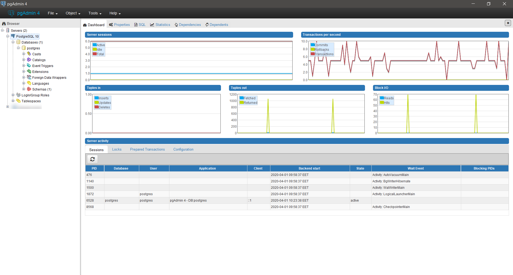
Note
You may notice that there's a created databse called
postgresthat will be used to create Cartoview databases.
Database Configuration ¶
-
Create Cartoview databases using pgAdmin
Now we will create Cartoview databases. Particularly,
cartoviewandcartoview_datastore.1. Under PostgreSQL 10 tree, right click and select create a database.
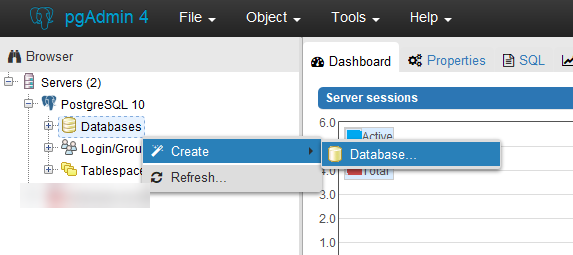
2. You will be prompted a pop-up to enter information about the database like the database name and template. Set the fields as in the images below.
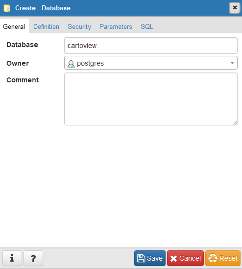
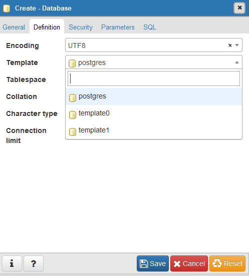
3. After creating the database, add
postgisextension to it.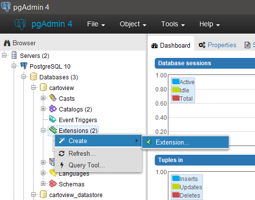
In the Name field, search for
postgisand select it. Then click save.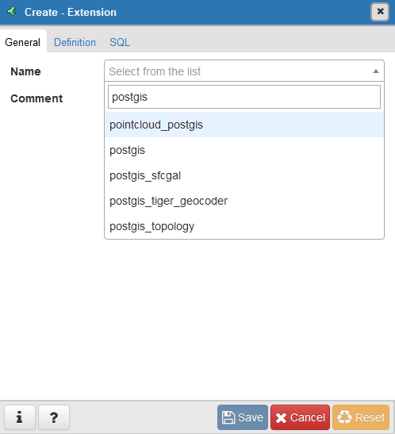
4. Repeat the steps from 1 to 3 to create the second database,
cartoview_datastore.Warning
When repeating the steps to create the second database, don't forget to name the database in step 2 to be
cartoview_datastore.Note
For step 3, if you got the below error when you click save after selecting
postgisextension.ERROR: could not load library "C:/Program Files/PostgreSQL/10/lib/rtpostgis-2.4.dll": %1 is not a valid Win32 application.Navigate to this path:
C:\Program Files\PostgreSQL\10\bin\postgisguiin PostgreSQL installation directory and copy these files,libeay32.dllandssleay32.dllto the bin path,C:\Program Files\PostgreSQL\10\binand try to save again.
GeoNode 2.10.3 Installation ¶
Follow these steps if you don't have GeoNode 2.10.3 installed on your Windows 10 machine.
-
Install GeoNode 2.10.3
Note
Make sure you're inside
cartoview_servicedirectory and thecartoview_venvis still activated.Download
GeoNode 2.10.3from this link.Extract it in the directory of
cartoview_servicefolder. This will make a folder calledgeonode-2.10.3that contains GeoNode instance.Now we need to navigate inside
geonode-2.10.3folder and install the packages fromrequirements.txtfile.1 2
cd geonode-2.10.3 pip install -r requirements.txt --no-deps
Finally, install geonode from the current directory using the following command.
1
pip install -e .
Warning
Make sure you got the dot
.when you copy the previous command.
Cartoview Libraries Installation ¶
Warning
Make sure you're inside cartoview_service directory and the cartoview_venv is still activated.
-
Download and install Cartoview
Download the latest version of cartoview by cloning the repository.
1
git clone https://github.com/cartologic/cartoview.git
This will create a directory called
cartoviewinsidecartoview_servicedirectory.Now we need to install cartoview dependencies, but first go to
cartoviewdirectory.1 2
cd cartoview pip install -e .
Warning
Make sure you got the dot
.when you copy the previous command. -
Add the created databases to your
settings.pyfile.Go to
cartoviewdirectory, you will find inside it another folder calledcartoview. Navigate inside it.You should find a file called
local_settings.py.sample. Remove the last wordsample.This will override the
settings.pyfile with a configured another settings file which islocal_settings.py.You can see the databases that we have created above inside
local_settings.py:1 2 3 4 5 6 7 8 9 10 11 12 13 14 15 16 17 18 19
DATABASES = { 'default': { 'ENGINE': 'django.contrib.gis.db.backends.postgis', 'NAME': 'cartoview', 'USER': 'postgres', 'PASSWORD': 'cartoview', 'HOST': 'localhost', 'PORT': '5432', }, # vector datastore for uploads 'datastore': { 'ENGINE': 'django.contrib.gis.db.backends.postgis’, 'NAME': 'cartoview_datastore', 'USER': 'postgres', 'PASSWORD': 'cartoview', 'HOST': 'localhost', 'PORT': '5432', } }Note
If you want to override any variable settings (for example to change the database password ,name or hostname), you can do this inside
local_settings.pyto override the pre-configured settings insettings.py. -
Create a symbolic link of OSGeo into cartoview_venv needed by GDAL to run properly
Add the following lines inside
local_settings.py, replacingyour_pathwith the complete path tocartoview_servicefolder.1 2 3
os.environ['Path'] = r'your_path\cartoview_service\cartoview_venv\Lib\site-packages\osgeo;' + os.environ['Path'] os.environ['GEOS_LIBRARY_PATH'] = r'your_path\cartoview_service\cartoview_venv\Lib\site-packages\osgeo\geos_c.dll' os.environ['GDAL_LIBRARY_PATH'] = r'your_path\cartoview_service\cartoview_venv\Lib\site-packages\osgeo\gdal202.dll'
-
Install Cartoview Project Template
We will call it
cartoview_project(Pick the name, you wish of course.)Note
You can install it at any directory, we will install it outside the
cartoview_servicedirectory.Make sure the virtual environment is still activated (If you see its name prefixed your prompt, you're good to go).
1
django-admin.py startproject --template=https://github.com/cartologic/Cartoview-project-template/archive/master.zip --name django.env,uwsgi.ini,.bowerrc,server.py cartoview_project
This will generate a folder called
cartoview_project(or the name you have specified).Cartoview project template will take care of the initial setup of your project. It will generate all the code that is needed to establish a Django project which is based on Cartoview and GeoNode Frameworks.
-
Migrate & Load default data
Navigate to
cartoview_projectand inside it, run the below commands.Detect changes in
app_managerApp1
python manage.py makemigrations app_manager
Create account Table:
1
python manage.py migrate account
Create the rest of the tables:
1
python manage.py migrate
Load default User:
1
python manage.py loaddata sample_admin.json
Load default oauth apps so that you will be able to authenticate with defined external server:
1
python manage.py loaddata default_oauth_apps.json
Load default Initial Data for Cartoivew:
1
python manage.py loaddata initial_data.json
-
Test Development Server by running this Command
1
python manage.py runserver 0.0.0.0:8000
At
localhost:8000, you should get:
Sign-in with:
1 2
user: admin password: admin
-
Install Apps From GeoApp Market
Load default Cartoview App Stores data:
1
python manage.py loaddata app_stores.json
Install nodejs and then install bower we need them to install app_manager dependencies
Go to your project folder (in our case, cartoview_project) and do:
1
bower install
Collect static files.
1
python manage.py collectstatic --no-input
Now you can install Apps from GeoApp Market Go to Apps tab, click Manage Apps button, and install the app you want.
GeoServer 2.16.2 Installation ¶
-
Install JRE
Make sure you have a Java Runtime Environment (JRE) installed on your system. GeoServer requires a Java 8 environment. The Oracle JRE is preferred, but OpenJDK has been known to work adequately. You can download JRE 8 from Oracle.
-
Install Apache Tomcat 9
Download the windows installer from here.
While proceeding with the installer, make sure to check install
Host Manager.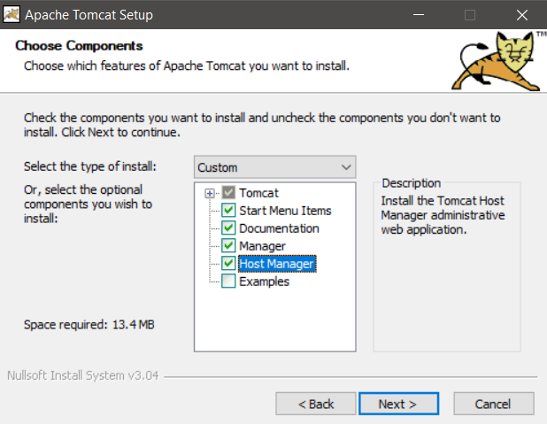
Configure Tomcat Web Management Interface by setting the admin credentials. We will set username to be
adminand password to becartoview.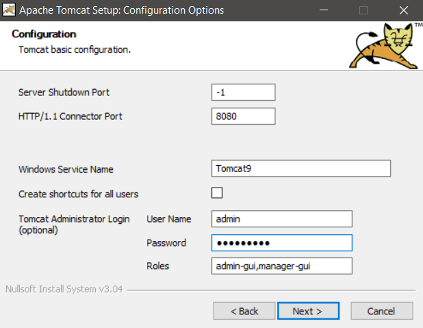
Note
Make sure the
Rolesfield containsadmin-gui,manager-gui.Proceed with the installation untill you have Tomcat 9 up and running and you can check it in Windows Services.
-
Download and install GeoServer war file
Now we will download the latest stable version of GeoServer war file from here.
You should get a war file called
geoserver-2.16.2.war. For sake of simplicity, we will rename it to begeoserver.warinstead of the previous.Copy the file and navigate to Tomcat installation directory and paste the war file inside
webappsfolder.Note
Usually, Tomcat directory is at this path
C:\Program Files\Apache Software Foundation\Tomcat 9.0.In the search bar (beside windows icon), search for
Servicesand run it. It should open to you all the running services on your windows machine.Navigate to a service called
Apache Tomcat 9.0 Tomcat9and restart it.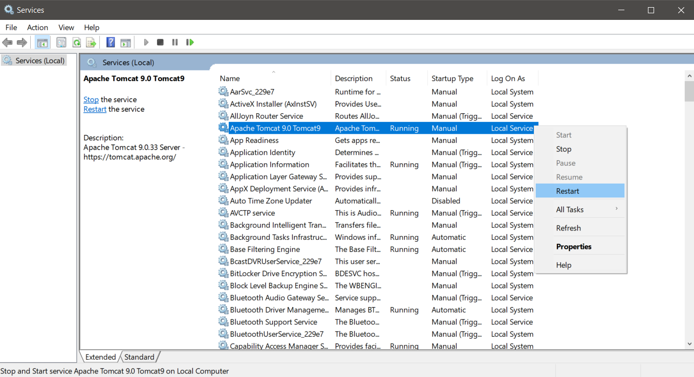
This will cause Tomcat to serve GeoServer from the war file which we have put inside
Tomcat 9.0/webapps.Info
Make sure that GeoServer is running:
- Navigate to
localhost:8080to open Tomcat then click onManager App. - Login with the credentials, you have entered during Tomcat installation.
- You should find GeoServer under Applications section started already.
Now GeoServer is up and running at
localhost:8080/geoserver.
To sign-in, make sure you're signed in Cartoview and click on GeoNode icon beside the
Loginbutton. - Navigate to
Important
Cartview must be up and running
Deployment Notes ¶
Important
In Production Configure GeoServer before uploading layers from hereImportant
Once Cartoview is installed it is expected to install all apps from the App Store automatically At the moment Cartoview will fully support Apache server only For nginx deployments, Cartoview will be able to detect new apps and get the updates, however to apply the updates, web server restart will be required to complete the process Cartoview will not be able to restart nginx when new apps are installed. After you install or update apps from the app manager page you will need to restart nginx manually until this issue is addressed in the future
Follow these steps to get apps working on nginx:
- Collect static files using this commands
python manage.py collectstatic --noinput - Restart server now you should restart server after installing any app